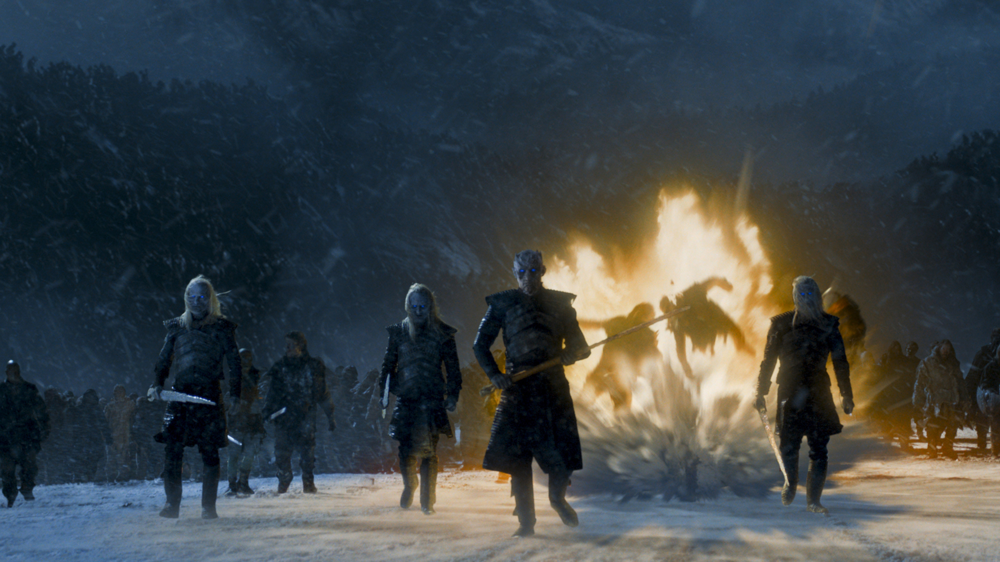

|

Gra o Tron
Gra o Tron Interesuje się od paru lat "Grą o tron" R.R.Martina. serial opowiada o historii Westeros i o walce rodów między sobą. Jest to serial bardzo interesujący oraz specyficzmy ma swój sposób. Polecam szczerze tem serial, jest wiele bitew, wiele intryg, wiele pojedynków rycerskich i wiele wiele W pierwszym sezonie dzieje się akcja na Północy oraz w Królewskiej Przystani. Opowiada o konflikcie między rodem Starków i Lannisterów ( potem dolączyły inne rody do wojny). Do wojny dołączają bracia króla, który został zabity przez dzika na polowaniu. Byli to bracia Baratheonowie. Walczyli o władze nad Siedmioma Królestwami. W drugim sezonie akcja dalej się rozwija i dochodzi do otwartej wojy między Starkami Lannisterami i Baratheonami. Akcja również rozwija się na innym kontynencie, Esos. Daenerys Targaeryan, ostatnia z rodu. Wraz z bratem budują armię, aby zdobyć ponownie władze nad Westeros. Trzeci sezon jest już trochę brutalniejszy. Dzieją się akcje takie jak np. Krwawy ślub. Sezon 3 opowiada tkże o losach Jona Snowa, bękarta Neda Startka. Jon Snow jest w Czarnej Straży i chroni reszte kontynentu przed dzikimi. Czwarty sezon dzieje się ciągle w tym samym miejscu. Starkowie przegrywają przez zdradę Freyów i Boltonów, którzy zamordowali prawie wszystkich Starków na Krwawym Ślubie. Daenerys dalej wyzwala i zbiera armię w Esos. Lannisterowie zaczynają się obawiać o ich władze. Piąty sezon rozwija sie jeszce bardiej, ponieważ świat dowiaduje się o Nocnym Królu i wszystko zaczyna się zmieniać. Ulubione strony WWW |